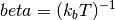
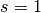
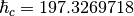
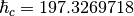

lbtecoeff module¶
This module, lbtecoeff.py contains the setup and calls
to the integral solvers and possible also external integral
solvers such that the linearlized Boltzmann Transport Equations
might be solved.
Contains routines that sets up and selects the integral functions to be called.
-
lbtecoeff.calculate_hall_carrier_concentration(hall)¶ Calculates the Hall carrier concentration .
- Parameters
- hallndarray
- Dimension: (N,M,3,3)
The Hall tensor
 in units of
for
N temperature and M chemical potential samplings.
in units of
for
N temperature and M chemical potential samplings.
- Returns
- ndarray
- Dimension: (N,M,3,3)
The Hall carrier concentration in units of
-
lbtecoeff.calculate_hall_factor(n, nh)¶ Calculates the Hall factor
- Parameters
- nndarray
- Dimension: (N,M,3,3)
The calcalated carrier concentration in for N temperature and M chemical potential samplings in units of
 .
. - nndarray
- Dimension: (N,M,3,3)
The Hall carrier concentration in for N temperature and M chemical potential samplings in units of
.
- Returns
- ndarray
- Dimension: (N,M,3,3)
The Hall factor.
-
lbtecoeff.numerick(tr, chempots, temperatures, bs=None)¶ Calculates the transport coefficients according to the tensors defined in
full_k_space_analytic()- Parameters
- trobject
A Transport() object.
- chempotsndarray
- Dimension: (N)
The N chemical potentials in eV on which to calculate the transport coefficients.
- temperaturefloat
- Dimension: (M)
The M temperatutes in K.
- bsndarray, optional
- Dimension: (I,J)
The energy dispersion in eV for the charge carriers for I bands and J k-points. If not given, it defaults to the Bandstructure() object stored in tr.
- Returns
- sigma, seebeck, lorenzndarray, ndarray, ndarray
- Dimension: (M,N,3,3)
Returns the electrical condcutivity, Seebeck coefficient and Lorenz tensor for M temperature and N chemical potential steps in units of
 ,
,
.
,
,
.
Notes
This routine accepts a predetermined array containg the relaxation time sampled at different carrier energy steps. When the evaluation of the intergrals are executed the carrier energy dispersion, velocity and scattering array are interpolated on all energies stored in bs and then the integrals are evaluated statically (if transport_integration_method is “trapz”, “simps”, “romb”, “tetra” or “smeared”). The former method can also be used in the case where the scattering array is pretetermined by setting transport_use_scattering_ontfly in the general configuration file to True.
-
lbtecoeff.parabolic_closed(tr, eta, bs, tau0_t, temperature)¶ Calculates the parabolic Fermi integrals for the transport coefficients.
- Parameters
- trobject
A Transport() object
- etafloat
The reduced chemical potential
- bsobject
A Bandstructure() object containing the dispersion relations of the N included bands
- tau0_t(N,M) ndarray
The relaxation time approximation (RTA) prefactors (tau0) in units of fs for the N bands and M defined scattering mechanisms. This is converted to the r factor in order to use the closed Fermi integrals from tau0
- temperaturefloat
The temperature in K.
- Returns
- tupplendarray, ndarray, ndarray, ndarray, ndarray, ndarray
- Dimension: (3,3), (3,3), (3,3), (3,3), (3,3), (3,3)
The electrical conductivity, Seebeck coefficient, Lorenz number, Hall coefficient (big R, where the small Hall factor is divided by the charge carrier concentration) and charge carrier concentration for n and ptype carriers in units of
See also
setup_scatteringfind_r_from_tau0parabolic_numeric
Notes
The closed equations for the Fermi integrals can easily be developed from the following equaion from
parabolic_numeric()System Message: WARNING/2 (\\Sigma^i_{lm}=-\\frac{4e^2\\sqrt{m}}{3\\sqrt{2}\\pi^2 \\hbar^3}\\int \\tau(E) E^{3/2}(E-\\mu)^i \\frac{\\partial f_0}{\\partial E} dE. )
latex exited with error [stdout] This is pdfTeX, Version 3.14159265-2.6-1.40.18 (TeX Live 2017) (preloaded format=latex) restricted \write18 enabled. entering extended mode (./math.tex LaTeX2e <2017-04-15> Babel <3.15> and hyphenation patterns for 84 language(s) loaded. (/home/efl/opt/texlive/texmf-dist/tex/latex/base/article.cls Document Class: article 2014/09/29 v1.4h Standard LaTeX document class (/home/efl/opt/texlive/texmf-dist/tex/latex/base/size12.clo)) (/home/efl/opt/texlive/texmf-dist/tex/latex/base/inputenc.sty (/home/efl/opt/texlive/texmf-dist/tex/latex/base/utf8.def (/home/efl/opt/texlive/texmf-dist/tex/latex/base/t1enc.dfu) (/home/efl/opt/texlive/texmf-dist/tex/latex/base/ot1enc.dfu) (/home/efl/opt/texlive/texmf-dist/tex/latex/base/omsenc.dfu))) (/home/efl/opt/texlive/texmf-dist/tex/latex/amsmath/amsmath.sty For additional information on amsmath, use the `?' option. (/home/efl/opt/texlive/texmf-dist/tex/latex/amsmath/amstext.sty (/home/efl/opt/texlive/texmf-dist/tex/latex/amsmath/amsgen.sty)) (/home/efl/opt/texlive/texmf-dist/tex/latex/amsmath/amsbsy.sty) (/home/efl/opt/texlive/texmf-dist/tex/latex/amsmath/amsopn.sty)) (/home/efl/opt/texlive/texmf-dist/tex/latex/amscls/amsthm.sty) (/home/efl/opt/texlive/texmf-dist/tex/latex/amsfonts/amssymb.sty (/home/efl/opt/texlive/texmf-dist/tex/latex/amsfonts/amsfonts.sty)) (/home/efl/opt/texlive/texmf-dist/tex/latex/anyfontsize/anyfontsize.sty) (/home/efl/opt/texlive/texmf-dist/tex/latex/tools/bm.sty) (./math.aux) (/home/efl/opt/texlive/texmf-dist/tex/latex/amsfonts/umsa.fd) (/home/efl/opt/texlive/texmf-dist/tex/latex/amsfonts/umsb.fd) ! Missing } inserted. <inserted text> } l.16 ...\\partial f_0}{\\partial E} dE.\end{split} ! Missing { inserted. <inserted text> { l.16 ...\\partial f_0}{\\partial E} dE.\end{split} ! Missing } inserted. <inserted text> } l.16 ...\\partial f_0}{\\partial E} dE.\end{split} ! Missing { inserted. <inserted text> { l.16 ...\\partial f_0}{\\partial E} dE.\end{split} ! Missing } inserted. <inserted text> } l.16 ...\\partial f_0}{\\partial E} dE.\end{split} ! Missing { inserted. <inserted text> { l.16 ...\\partial f_0}{\\partial E} dE.\end{split} ! Missing } inserted. <inserted text> } l.16 ...\\partial f_0}{\\partial E} dE.\end{split} ! Missing { inserted. <inserted text> { l.16 ...\\partial f_0}{\\partial E} dE.\end{split} [1] (./math.aux) ) (see the transcript file for additional information) Output written on math.dvi (1 page, 804 bytes). Transcript written on math.log.
We now chose the
 for the given tensor and enforce a
scattering model of the form
for the given tensor and enforce a
scattering model of the form  ,
where
,
where  is constant in energy. Finally we use the
product rule and expand the integral. This yields
is constant in energy. Finally we use the
product rule and expand the integral. This yieldsSystem Message: WARNING/2 (\\Sigma^0=\\frac{4e^2\\sqrt{m}}{3\\sqrt{2}\\pi^2 \\hbar^3}(r+1)F_r(E), )
latex exited with error [stdout] This is pdfTeX, Version 3.14159265-2.6-1.40.18 (TeX Live 2017) (preloaded format=latex) restricted \write18 enabled. entering extended mode (./math.tex LaTeX2e <2017-04-15> Babel <3.15> and hyphenation patterns for 84 language(s) loaded. (/home/efl/opt/texlive/texmf-dist/tex/latex/base/article.cls Document Class: article 2014/09/29 v1.4h Standard LaTeX document class (/home/efl/opt/texlive/texmf-dist/tex/latex/base/size12.clo)) (/home/efl/opt/texlive/texmf-dist/tex/latex/base/inputenc.sty (/home/efl/opt/texlive/texmf-dist/tex/latex/base/utf8.def (/home/efl/opt/texlive/texmf-dist/tex/latex/base/t1enc.dfu) (/home/efl/opt/texlive/texmf-dist/tex/latex/base/ot1enc.dfu) (/home/efl/opt/texlive/texmf-dist/tex/latex/base/omsenc.dfu))) (/home/efl/opt/texlive/texmf-dist/tex/latex/amsmath/amsmath.sty For additional information on amsmath, use the `?' option. (/home/efl/opt/texlive/texmf-dist/tex/latex/amsmath/amstext.sty (/home/efl/opt/texlive/texmf-dist/tex/latex/amsmath/amsgen.sty)) (/home/efl/opt/texlive/texmf-dist/tex/latex/amsmath/amsbsy.sty) (/home/efl/opt/texlive/texmf-dist/tex/latex/amsmath/amsopn.sty)) (/home/efl/opt/texlive/texmf-dist/tex/latex/amscls/amsthm.sty) (/home/efl/opt/texlive/texmf-dist/tex/latex/amsfonts/amssymb.sty (/home/efl/opt/texlive/texmf-dist/tex/latex/amsfonts/amsfonts.sty)) (/home/efl/opt/texlive/texmf-dist/tex/latex/anyfontsize/anyfontsize.sty) (/home/efl/opt/texlive/texmf-dist/tex/latex/tools/bm.sty) (./math.aux) (/home/efl/opt/texlive/texmf-dist/tex/latex/amsfonts/umsa.fd) (/home/efl/opt/texlive/texmf-dist/tex/latex/amsfonts/umsb.fd) ! Missing } inserted. <inserted text> } l.15 \\hbar^3}(r+1)F_r(E),\end{split} ! Missing { inserted. <inserted text> { l.15 \\hbar^3}(r+1)F_r(E),\end{split} ! Missing } inserted. <inserted text> } l.15 \\hbar^3}(r+1)F_r(E),\end{split} ! Missing { inserted. <inserted text> { l.15 \\hbar^3}(r+1)F_r(E),\end{split} [1] (./math.aux) ) (see the transcript file for additional information) Output written on math.dvi (1 page, 592 bytes). Transcript written on math.log.
System Message: WARNING/2 (\\Sigma^1=\\frac{k_n}{e_n}\\left(\\frac{(r+2) F_{r+1}(E)}{(r+1)F_r(E)-\\mu} \\right), )
latex exited with error [stdout] This is pdfTeX, Version 3.14159265-2.6-1.40.18 (TeX Live 2017) (preloaded format=latex) restricted \write18 enabled. entering extended mode (./math.tex LaTeX2e <2017-04-15> Babel <3.15> and hyphenation patterns for 84 language(s) loaded. (/home/efl/opt/texlive/texmf-dist/tex/latex/base/article.cls Document Class: article 2014/09/29 v1.4h Standard LaTeX document class (/home/efl/opt/texlive/texmf-dist/tex/latex/base/size12.clo)) (/home/efl/opt/texlive/texmf-dist/tex/latex/base/inputenc.sty (/home/efl/opt/texlive/texmf-dist/tex/latex/base/utf8.def (/home/efl/opt/texlive/texmf-dist/tex/latex/base/t1enc.dfu) (/home/efl/opt/texlive/texmf-dist/tex/latex/base/ot1enc.dfu) (/home/efl/opt/texlive/texmf-dist/tex/latex/base/omsenc.dfu))) (/home/efl/opt/texlive/texmf-dist/tex/latex/amsmath/amsmath.sty For additional information on amsmath, use the `?' option. (/home/efl/opt/texlive/texmf-dist/tex/latex/amsmath/amstext.sty (/home/efl/opt/texlive/texmf-dist/tex/latex/amsmath/amsgen.sty)) (/home/efl/opt/texlive/texmf-dist/tex/latex/amsmath/amsbsy.sty) (/home/efl/opt/texlive/texmf-dist/tex/latex/amsmath/amsopn.sty)) (/home/efl/opt/texlive/texmf-dist/tex/latex/amscls/amsthm.sty) (/home/efl/opt/texlive/texmf-dist/tex/latex/amsfonts/amssymb.sty (/home/efl/opt/texlive/texmf-dist/tex/latex/amsfonts/amsfonts.sty)) (/home/efl/opt/texlive/texmf-dist/tex/latex/anyfontsize/anyfontsize.sty) (/home/efl/opt/texlive/texmf-dist/tex/latex/tools/bm.sty) (./math.aux) (/home/efl/opt/texlive/texmf-dist/tex/latex/amsfonts/umsa.fd) (/home/efl/opt/texlive/texmf-dist/tex/latex/amsfonts/umsb.fd) ! Missing } inserted. <inserted text> } l.15 ...E)}{(r+1)F_r(E)-\\mu} \\right),\end{split} ! Missing { inserted. <inserted text> { l.15 ...E)}{(r+1)F_r(E)-\\mu} \\right),\end{split} ! Missing } inserted. <inserted text> } l.15 ...E)}{(r+1)F_r(E)-\\mu} \\right),\end{split} ! Missing { inserted. <inserted text> { l.15 ...E)}{(r+1)F_r(E)-\\mu} \\right),\end{split} [1] (./math.aux) ) (see the transcript file for additional information) Output written on math.dvi (1 page, 680 bytes). Transcript written on math.log.
where is the famous Fermi integrals
It is customary to introduce the dimensionless energy and chemical potential . We have the general relation
and the coefficients can be easily transformed. Please consult
parabolic_numeric()for the specific transport tensors and units used.The execution of this method needs currently needs the effective mass tensor to be isotropic and only one scattering mechanism can be used per band. This method is selected by setting transport_method to “closed” in the general configuration file.
-
lbtecoeff.parabolic_numeric(tr, eta, bs, tau0_t, temperature)¶ The solution of the energy integrals for the BTE RTA for a parabolic dispersion.
- Parameters
- trobject
A Transport() object.
- etafloat
The reduced chemical potential.
- bsobject
A Bandstructure() object containing the energy dispersions for the N bands.
- tau0_t(N,M) ndarray
The relaxation time approximation (RTA) prefactors (tau0) in units of fs for the N bands and M defined scattering mechanisms.
- temperaturefloat
The temperature in K.
- Returns
- tupple, ndarray, ndarray, ndarray, ndarray, ndarray
- Dimension: (3,3), (3,3), (3,3), (3,3), (3,3), (3,3)
The electrical conductivity, Seebeck coefficient, Lorenz number, Hall coefficient (big R, where the small Hall factor is divided by the charge carrier concentration) and charge carrier concentration for n and ptype carriers in units of
respectively.
Notes
This routine is the same as
parabolic_closed()except here we solve the Fermi intergrals numerically. This allows to use concatenated scattering mechanisms for each band. Otherwise the approximations and requirements are similar. The method is selected by setting transport_method to “numeric”.The transport coefficients are defined as
System Message: WARNING/2 (\\Sigma^i_{lm}=-s\\frac{e^2}{8\\pi^3}\\int \\tau(E(\\vec{k}))v_l(E(\\vec{k})) v_m(E(\\vec{k}))(E(\\vec{k})-\\mu)^i \\frac{\\partial f_0}{\\partial E(\\vec{k})} d\\vec{k}. )
latex exited with error [stdout] This is pdfTeX, Version 3.14159265-2.6-1.40.18 (TeX Live 2017) (preloaded format=latex) restricted \write18 enabled. entering extended mode (./math.tex LaTeX2e <2017-04-15> Babel <3.15> and hyphenation patterns for 84 language(s) loaded. (/home/efl/opt/texlive/texmf-dist/tex/latex/base/article.cls Document Class: article 2014/09/29 v1.4h Standard LaTeX document class (/home/efl/opt/texlive/texmf-dist/tex/latex/base/size12.clo)) (/home/efl/opt/texlive/texmf-dist/tex/latex/base/inputenc.sty (/home/efl/opt/texlive/texmf-dist/tex/latex/base/utf8.def (/home/efl/opt/texlive/texmf-dist/tex/latex/base/t1enc.dfu) (/home/efl/opt/texlive/texmf-dist/tex/latex/base/ot1enc.dfu) (/home/efl/opt/texlive/texmf-dist/tex/latex/base/omsenc.dfu))) (/home/efl/opt/texlive/texmf-dist/tex/latex/amsmath/amsmath.sty For additional information on amsmath, use the `?' option. (/home/efl/opt/texlive/texmf-dist/tex/latex/amsmath/amstext.sty (/home/efl/opt/texlive/texmf-dist/tex/latex/amsmath/amsgen.sty)) (/home/efl/opt/texlive/texmf-dist/tex/latex/amsmath/amsbsy.sty) (/home/efl/opt/texlive/texmf-dist/tex/latex/amsmath/amsopn.sty)) (/home/efl/opt/texlive/texmf-dist/tex/latex/amscls/amsthm.sty) (/home/efl/opt/texlive/texmf-dist/tex/latex/amsfonts/amssymb.sty (/home/efl/opt/texlive/texmf-dist/tex/latex/amsfonts/amsfonts.sty)) (/home/efl/opt/texlive/texmf-dist/tex/latex/anyfontsize/anyfontsize.sty) (/home/efl/opt/texlive/texmf-dist/tex/latex/tools/bm.sty) (./math.aux) (/home/efl/opt/texlive/texmf-dist/tex/latex/amsfonts/umsa.fd) (/home/efl/opt/texlive/texmf-dist/tex/latex/amsfonts/umsb.fd) ! Missing } inserted. <inserted text> } l.18 E(\\vec{k})} d\\vec{k}.\end{split} ! Missing { inserted. <inserted text> { l.18 E(\\vec{k})} d\\vec{k}.\end{split} ! Missing } inserted. <inserted text> } l.18 E(\\vec{k})} d\\vec{k}.\end{split} ! Missing { inserted. <inserted text> { l.18 E(\\vec{k})} d\\vec{k}.\end{split} ! Missing } inserted. <inserted text> } l.18 E(\\vec{k})} d\\vec{k}.\end{split} ! Missing { inserted. <inserted text> { l.18 E(\\vec{k})} d\\vec{k}.\end{split} ! Missing } inserted. <inserted text> } l.18 E(\\vec{k})} d\\vec{k}.\end{split} ! Missing { inserted. <inserted text> { l.18 E(\\vec{k})} d\\vec{k}.\end{split} [1] (./math.aux) ) (see the transcript file for additional information) Output written on math.dvi (1 page, 904 bytes). Transcript written on math.log.
Using the fact that we get
System Message: WARNING/2 (\\Sigma^i_{lm}=-s\\frac{e^2}{2\\pi^2}\\int k^2 \\tau(E(\\vec{k}))v_l(E(\\vec{k})) v_m(E(\\vec{k}))(E(\\vec{k})-\\mu)^i \\frac{\\partial f_0}{\\partial E(\\vec{k})} dk. )
latex exited with error [stdout] This is pdfTeX, Version 3.14159265-2.6-1.40.18 (TeX Live 2017) (preloaded format=latex) restricted \write18 enabled. entering extended mode (./math.tex LaTeX2e <2017-04-15> Babel <3.15> and hyphenation patterns for 84 language(s) loaded. (/home/efl/opt/texlive/texmf-dist/tex/latex/base/article.cls Document Class: article 2014/09/29 v1.4h Standard LaTeX document class (/home/efl/opt/texlive/texmf-dist/tex/latex/base/size12.clo)) (/home/efl/opt/texlive/texmf-dist/tex/latex/base/inputenc.sty (/home/efl/opt/texlive/texmf-dist/tex/latex/base/utf8.def (/home/efl/opt/texlive/texmf-dist/tex/latex/base/t1enc.dfu) (/home/efl/opt/texlive/texmf-dist/tex/latex/base/ot1enc.dfu) (/home/efl/opt/texlive/texmf-dist/tex/latex/base/omsenc.dfu))) (/home/efl/opt/texlive/texmf-dist/tex/latex/amsmath/amsmath.sty For additional information on amsmath, use the `?' option. (/home/efl/opt/texlive/texmf-dist/tex/latex/amsmath/amstext.sty (/home/efl/opt/texlive/texmf-dist/tex/latex/amsmath/amsgen.sty)) (/home/efl/opt/texlive/texmf-dist/tex/latex/amsmath/amsbsy.sty) (/home/efl/opt/texlive/texmf-dist/tex/latex/amsmath/amsopn.sty)) (/home/efl/opt/texlive/texmf-dist/tex/latex/amscls/amsthm.sty) (/home/efl/opt/texlive/texmf-dist/tex/latex/amsfonts/amssymb.sty (/home/efl/opt/texlive/texmf-dist/tex/latex/amsfonts/amsfonts.sty)) (/home/efl/opt/texlive/texmf-dist/tex/latex/anyfontsize/anyfontsize.sty) (/home/efl/opt/texlive/texmf-dist/tex/latex/tools/bm.sty) (./math.aux) (/home/efl/opt/texlive/texmf-dist/tex/latex/amsfonts/umsa.fd) (/home/efl/opt/texlive/texmf-dist/tex/latex/amsfonts/umsb.fd) ! Missing } inserted. <inserted text> } l.17 ...f_0}{\\partial E(\\vec{k})} dk.\end{split} ! Missing { inserted. <inserted text> { l.17 ...f_0}{\\partial E(\\vec{k})} dk.\end{split} ! Missing } inserted. <inserted text> } l.17 ...f_0}{\\partial E(\\vec{k})} dk.\end{split} ! Missing { inserted. <inserted text> { l.17 ...f_0}{\\partial E(\\vec{k})} dk.\end{split} ! Missing } inserted. <inserted text> } l.17 ...f_0}{\\partial E(\\vec{k})} dk.\end{split} ! Missing { inserted. <inserted text> { l.17 ...f_0}{\\partial E(\\vec{k})} dk.\end{split} ! Missing } inserted. <inserted text> } l.17 ...f_0}{\\partial E(\\vec{k})} dk.\end{split} ! Missing { inserted. <inserted text> { l.17 ...f_0}{\\partial E(\\vec{k})} dk.\end{split} [1] (./math.aux) ) (see the transcript file for additional information) Output written on math.dvi (1 page, 900 bytes). Transcript written on math.log.
For parabolic bands . We also use . Furthermore we assume that our crystal is isotropic and cubic, such that . Then and the expression above simplifies to
System Message: WARNING/2 (\\Sigma^i=-s\\frac{\\sqrt{2}e^2\\sqrt{m}}{3\\pi^2 \\hbar^3}\\int \\tau(E) E^{3/2}(E-\\mu)^i \\frac{\\partial f_0}{\\partial E} dE )
latex exited with error [stdout] This is pdfTeX, Version 3.14159265-2.6-1.40.18 (TeX Live 2017) (preloaded format=latex) restricted \write18 enabled. entering extended mode (./math.tex LaTeX2e <2017-04-15> Babel <3.15> and hyphenation patterns for 84 language(s) loaded. (/home/efl/opt/texlive/texmf-dist/tex/latex/base/article.cls Document Class: article 2014/09/29 v1.4h Standard LaTeX document class (/home/efl/opt/texlive/texmf-dist/tex/latex/base/size12.clo)) (/home/efl/opt/texlive/texmf-dist/tex/latex/base/inputenc.sty (/home/efl/opt/texlive/texmf-dist/tex/latex/base/utf8.def (/home/efl/opt/texlive/texmf-dist/tex/latex/base/t1enc.dfu) (/home/efl/opt/texlive/texmf-dist/tex/latex/base/ot1enc.dfu) (/home/efl/opt/texlive/texmf-dist/tex/latex/base/omsenc.dfu))) (/home/efl/opt/texlive/texmf-dist/tex/latex/amsmath/amsmath.sty For additional information on amsmath, use the `?' option. (/home/efl/opt/texlive/texmf-dist/tex/latex/amsmath/amstext.sty (/home/efl/opt/texlive/texmf-dist/tex/latex/amsmath/amsgen.sty)) (/home/efl/opt/texlive/texmf-dist/tex/latex/amsmath/amsbsy.sty) (/home/efl/opt/texlive/texmf-dist/tex/latex/amsmath/amsopn.sty)) (/home/efl/opt/texlive/texmf-dist/tex/latex/amscls/amsthm.sty) (/home/efl/opt/texlive/texmf-dist/tex/latex/amsfonts/amssymb.sty (/home/efl/opt/texlive/texmf-dist/tex/latex/amsfonts/amsfonts.sty)) (/home/efl/opt/texlive/texmf-dist/tex/latex/anyfontsize/anyfontsize.sty) (/home/efl/opt/texlive/texmf-dist/tex/latex/tools/bm.sty) (./math.aux) (/home/efl/opt/texlive/texmf-dist/tex/latex/amsfonts/umsa.fd) (/home/efl/opt/texlive/texmf-dist/tex/latex/amsfonts/umsb.fd) ! Missing } inserted. <inserted text> } l.16 ...{\\partial f_0}{\\partial E} dE\end{split} ! Missing { inserted. <inserted text> { l.16 ...{\\partial f_0}{\\partial E} dE\end{split} ! Missing } inserted. <inserted text> } l.16 ...{\\partial f_0}{\\partial E} dE\end{split} ! Missing { inserted. <inserted text> { l.16 ...{\\partial f_0}{\\partial E} dE\end{split} ! Missing } inserted. <inserted text> } l.16 ...{\\partial f_0}{\\partial E} dE\end{split} ! Missing { inserted. <inserted text> { l.16 ...{\\partial f_0}{\\partial E} dE\end{split} ! Missing } inserted. <inserted text> } l.16 ...{\\partial f_0}{\\partial E} dE\end{split} ! Missing { inserted. <inserted text> { l.16 ...{\\partial f_0}{\\partial E} dE\end{split} [1] (./math.aux) ) (see the transcript file for additional information) Output written on math.dvi (1 page, 784 bytes). Transcript written on math.log.
And we have a very manageble integral over energy. Here, we have assumed that
 can be expressed in terms of
energy instead of the wave vector. A similar procedure can be
used to obtain energy integrals for other dispersion relations
than parabolic. As opposed to
can be expressed in terms of
energy instead of the wave vector. A similar procedure can be
used to obtain energy integrals for other dispersion relations
than parabolic. As opposed to parabolic_closed()we here want to solve the integrals numerically (in order to be able to use composite) and thus want to simplify
the mathematical operations in the integrands as much
as possible. Sincewhere  we get
System Message: WARNING/2 (\\Sigma^i=s\\frac{\\sqrt{2m}e^2\\beta}{6\\pi^2 \\hbar^3}\\int \\frac{\\tau(E) E^{3/2}(E-\\mu)^i} {1+\\cosh(\\beta(E-\\mu))} dE )
latex exited with error [stdout] This is pdfTeX, Version 3.14159265-2.6-1.40.18 (TeX Live 2017) (preloaded format=latex) restricted \write18 enabled. entering extended mode (./math.tex LaTeX2e <2017-04-15> Babel <3.15> and hyphenation patterns for 84 language(s) loaded. (/home/efl/opt/texlive/texmf-dist/tex/latex/base/article.cls Document Class: article 2014/09/29 v1.4h Standard LaTeX document class (/home/efl/opt/texlive/texmf-dist/tex/latex/base/size12.clo)) (/home/efl/opt/texlive/texmf-dist/tex/latex/base/inputenc.sty (/home/efl/opt/texlive/texmf-dist/tex/latex/base/utf8.def (/home/efl/opt/texlive/texmf-dist/tex/latex/base/t1enc.dfu) (/home/efl/opt/texlive/texmf-dist/tex/latex/base/ot1enc.dfu) (/home/efl/opt/texlive/texmf-dist/tex/latex/base/omsenc.dfu))) (/home/efl/opt/texlive/texmf-dist/tex/latex/amsmath/amsmath.sty For additional information on amsmath, use the `?' option. (/home/efl/opt/texlive/texmf-dist/tex/latex/amsmath/amstext.sty (/home/efl/opt/texlive/texmf-dist/tex/latex/amsmath/amsgen.sty)) (/home/efl/opt/texlive/texmf-dist/tex/latex/amsmath/amsbsy.sty) (/home/efl/opt/texlive/texmf-dist/tex/latex/amsmath/amsopn.sty)) (/home/efl/opt/texlive/texmf-dist/tex/latex/amscls/amsthm.sty) (/home/efl/opt/texlive/texmf-dist/tex/latex/amsfonts/amssymb.sty (/home/efl/opt/texlive/texmf-dist/tex/latex/amsfonts/amsfonts.sty)) (/home/efl/opt/texlive/texmf-dist/tex/latex/anyfontsize/anyfontsize.sty) (/home/efl/opt/texlive/texmf-dist/tex/latex/tools/bm.sty) (./math.aux) (/home/efl/opt/texlive/texmf-dist/tex/latex/amsfonts/umsa.fd) (/home/efl/opt/texlive/texmf-dist/tex/latex/amsfonts/umsb.fd) ! Missing } inserted. <inserted text> } l.16 {1+\\cosh(\\beta(E-\\mu))} dE\end{split} ! Missing { inserted. <inserted text> { l.16 {1+\\cosh(\\beta(E-\\mu))} dE\end{split} ! Missing } inserted. <inserted text> } l.16 {1+\\cosh(\\beta(E-\\mu))} dE\end{split} ! Missing { inserted. <inserted text> { l.16 {1+\\cosh(\\beta(E-\\mu))} dE\end{split} ! Missing } inserted. <inserted text> } l.16 {1+\\cosh(\\beta(E-\\mu))} dE\end{split} ! Missing { inserted. <inserted text> { l.16 {1+\\cosh(\\beta(E-\\mu))} dE\end{split} ! Missing } inserted. <inserted text> } l.16 {1+\\cosh(\\beta(E-\\mu))} dE\end{split} ! Missing { inserted. <inserted text> { l.16 {1+\\cosh(\\beta(E-\\mu))} dE\end{split} [1] (./math.aux) ) (see the transcript file for additional information) Output written on math.dvi (1 page, 796 bytes). Transcript written on math.log.
Notice now that there is a factor of 1/2 difference in front of these integrals compared to the ones in
parabolic_closed()due to the expansion of the derivative of the Fermi function with respect to energy. The factor accounts for spin degeneracy, otherwise  and is set to True or False for each band with the parameter spin_deg in the bandstructure configuration file.It is customary to introduce the dimensionless energy and chemical potential . Doing this we obtain
System Message: WARNING/2 (\\Sigma^i=s\\frac{\\sqrt{2\\mathrm{m}}\\mathrm{e}^2} {6\\mathrm{\\hbar}^3 \\pi^2 \\beta^{i+3/2}}\\int \\frac{(\\epsilon-\\eta)^i\\tau(\\epsilon/\\beta) \\epsilon^{3/2}}{1+\\cosh(\\epsilon-\\eta)}d\\epsilon )
latex exited with error [stdout] This is pdfTeX, Version 3.14159265-2.6-1.40.18 (TeX Live 2017) (preloaded format=latex) restricted \write18 enabled. entering extended mode (./math.tex LaTeX2e <2017-04-15> Babel <3.15> and hyphenation patterns for 84 language(s) loaded. (/home/efl/opt/texlive/texmf-dist/tex/latex/base/article.cls Document Class: article 2014/09/29 v1.4h Standard LaTeX document class (/home/efl/opt/texlive/texmf-dist/tex/latex/base/size12.clo)) (/home/efl/opt/texlive/texmf-dist/tex/latex/base/inputenc.sty (/home/efl/opt/texlive/texmf-dist/tex/latex/base/utf8.def (/home/efl/opt/texlive/texmf-dist/tex/latex/base/t1enc.dfu) (/home/efl/opt/texlive/texmf-dist/tex/latex/base/ot1enc.dfu) (/home/efl/opt/texlive/texmf-dist/tex/latex/base/omsenc.dfu))) (/home/efl/opt/texlive/texmf-dist/tex/latex/amsmath/amsmath.sty For additional information on amsmath, use the `?' option. (/home/efl/opt/texlive/texmf-dist/tex/latex/amsmath/amstext.sty (/home/efl/opt/texlive/texmf-dist/tex/latex/amsmath/amsgen.sty)) (/home/efl/opt/texlive/texmf-dist/tex/latex/amsmath/amsbsy.sty) (/home/efl/opt/texlive/texmf-dist/tex/latex/amsmath/amsopn.sty)) (/home/efl/opt/texlive/texmf-dist/tex/latex/amscls/amsthm.sty) (/home/efl/opt/texlive/texmf-dist/tex/latex/amsfonts/amssymb.sty (/home/efl/opt/texlive/texmf-dist/tex/latex/amsfonts/amsfonts.sty)) (/home/efl/opt/texlive/texmf-dist/tex/latex/anyfontsize/anyfontsize.sty) (/home/efl/opt/texlive/texmf-dist/tex/latex/tools/bm.sty) (./math.aux) (/home/efl/opt/texlive/texmf-dist/tex/latex/amsfonts/umsa.fd) (/home/efl/opt/texlive/texmf-dist/tex/latex/amsfonts/umsb.fd) ! Missing } inserted. <inserted text> } l.17 ...osh(\\epsilon-\\eta)}d\\epsilon\end{split} ! Missing } inserted. <inserted text> } l.17 ...osh(\\epsilon-\\eta)}d\\epsilon\end{split} ! Missing { inserted. <inserted text> { l.17 ...osh(\\epsilon-\\eta)}d\\epsilon\end{split} ! Missing } inserted. <inserted text> } l.17 ...osh(\\epsilon-\\eta)}d\\epsilon\end{split} ! Missing { inserted. <inserted text> { l.17 ...osh(\\epsilon-\\eta)}d\\epsilon\end{split} ! Missing { inserted. <inserted text> { l.17 ...osh(\\epsilon-\\eta)}d\\epsilon\end{split} ! Missing } inserted. <inserted text> } l.17 ...osh(\\epsilon-\\eta)}d\\epsilon\end{split} ! Missing { inserted. <inserted text> { l.17 ...osh(\\epsilon-\\eta)}d\\epsilon\end{split} ! Missing } inserted. <inserted text> } l.17 ...osh(\\epsilon-\\eta)}d\\epsilon\end{split} ! Missing } inserted. <inserted text> } l.17 ...osh(\\epsilon-\\eta)}d\\epsilon\end{split} ! Missing { inserted. <inserted text> { l.17 ...osh(\\epsilon-\\eta)}d\\epsilon\end{split} ! Missing } inserted. <inserted text> } l.17 ...osh(\\epsilon-\\eta)}d\\epsilon\end{split} ! Missing { inserted. <inserted text> { l.17 ...osh(\\epsilon-\\eta)}d\\epsilon\end{split} ! Missing { inserted. <inserted text> { l.17 ...osh(\\epsilon-\\eta)}d\\epsilon\end{split} ! Missing } inserted. <inserted text> } l.17 ...osh(\\epsilon-\\eta)}d\\epsilon\end{split} ! Missing { inserted. <inserted text> { l.17 ...osh(\\epsilon-\\eta)}d\\epsilon\end{split} [1] (./math.aux) ) (see the transcript file for additional information) Output written on math.dvi (1 page, 964 bytes). Transcript written on math.log.
The carrier density
 can be calculated using
can be calculated usingSystem Message: WARNING/2 (n=s\\frac{1}{8\\pi^3}\\int f_0 d\\vec{k} )
latex exited with error [stdout] This is pdfTeX, Version 3.14159265-2.6-1.40.18 (TeX Live 2017) (preloaded format=latex) restricted \write18 enabled. entering extended mode (./math.tex LaTeX2e <2017-04-15> Babel <3.15> and hyphenation patterns for 84 language(s) loaded. (/home/efl/opt/texlive/texmf-dist/tex/latex/base/article.cls Document Class: article 2014/09/29 v1.4h Standard LaTeX document class (/home/efl/opt/texlive/texmf-dist/tex/latex/base/size12.clo)) (/home/efl/opt/texlive/texmf-dist/tex/latex/base/inputenc.sty (/home/efl/opt/texlive/texmf-dist/tex/latex/base/utf8.def (/home/efl/opt/texlive/texmf-dist/tex/latex/base/t1enc.dfu) (/home/efl/opt/texlive/texmf-dist/tex/latex/base/ot1enc.dfu) (/home/efl/opt/texlive/texmf-dist/tex/latex/base/omsenc.dfu))) (/home/efl/opt/texlive/texmf-dist/tex/latex/amsmath/amsmath.sty For additional information on amsmath, use the `?' option. (/home/efl/opt/texlive/texmf-dist/tex/latex/amsmath/amstext.sty (/home/efl/opt/texlive/texmf-dist/tex/latex/amsmath/amsgen.sty)) (/home/efl/opt/texlive/texmf-dist/tex/latex/amsmath/amsbsy.sty) (/home/efl/opt/texlive/texmf-dist/tex/latex/amsmath/amsopn.sty)) (/home/efl/opt/texlive/texmf-dist/tex/latex/amscls/amsthm.sty) (/home/efl/opt/texlive/texmf-dist/tex/latex/amsfonts/amssymb.sty (/home/efl/opt/texlive/texmf-dist/tex/latex/amsfonts/amsfonts.sty)) (/home/efl/opt/texlive/texmf-dist/tex/latex/anyfontsize/anyfontsize.sty) (/home/efl/opt/texlive/texmf-dist/tex/latex/tools/bm.sty) (./math.aux) (/home/efl/opt/texlive/texmf-dist/tex/latex/amsfonts/umsa.fd) (/home/efl/opt/texlive/texmf-dist/tex/latex/amsfonts/umsb.fd) ! Missing } inserted. <inserted text> } l.14 ...{1}{8\\pi^3}\\int f_0 d\\vec{k}\end{split} ! Missing { inserted. <inserted text> { l.14 ...{1}{8\\pi^3}\\int f_0 d\\vec{k}\end{split} ! Missing } inserted. <inserted text> } l.14 ...{1}{8\\pi^3}\\int f_0 d\\vec{k}\end{split} ! Missing { inserted. <inserted text> { l.14 ...{1}{8\\pi^3}\\int f_0 d\\vec{k}\end{split} [1] (./math.aux) ) (see the transcript file for additional information) Output written on math.dvi (1 page, 436 bytes). Transcript written on math.log.
Depending on what kind of scattering models that is chosen, the rescaling of
needs to be performed for a
particular scattering model in order to pull the correct
factor outside the integral.In order to obtain the correct units the equation above for each transport coefficient have been implemented as
Electrical conductivity:
System Message: WARNING/2 (\\frac{s\\sqrt{20}}{6\\pi}G\\frac{\\sqrt{m_c}}{\hbar_c \\tilde{\hbar}}k^{3/2}a^{1/2}T^{3/2} \\int_0^{\\infty}\\frac{\\tau(\\epsilon/\\beta) \\epsilon^{3/2}}{1+\\cosh(\\epsilon-\\eta)} d\\epsilon \\left[ \\frac{\\mathrm{S}}{\\mathrm{m}}\\right]. )
latex exited with error [stdout] This is pdfTeX, Version 3.14159265-2.6-1.40.18 (TeX Live 2017) (preloaded format=latex) restricted \write18 enabled. entering extended mode (./math.tex LaTeX2e <2017-04-15> Babel <3.15> and hyphenation patterns for 84 language(s) loaded. (/home/efl/opt/texlive/texmf-dist/tex/latex/base/article.cls Document Class: article 2014/09/29 v1.4h Standard LaTeX document class (/home/efl/opt/texlive/texmf-dist/tex/latex/base/size12.clo)) (/home/efl/opt/texlive/texmf-dist/tex/latex/base/inputenc.sty (/home/efl/opt/texlive/texmf-dist/tex/latex/base/utf8.def (/home/efl/opt/texlive/texmf-dist/tex/latex/base/t1enc.dfu) (/home/efl/opt/texlive/texmf-dist/tex/latex/base/ot1enc.dfu) (/home/efl/opt/texlive/texmf-dist/tex/latex/base/omsenc.dfu))) (/home/efl/opt/texlive/texmf-dist/tex/latex/amsmath/amsmath.sty For additional information on amsmath, use the `?' option. (/home/efl/opt/texlive/texmf-dist/tex/latex/amsmath/amstext.sty (/home/efl/opt/texlive/texmf-dist/tex/latex/amsmath/amsgen.sty)) (/home/efl/opt/texlive/texmf-dist/tex/latex/amsmath/amsbsy.sty) (/home/efl/opt/texlive/texmf-dist/tex/latex/amsmath/amsopn.sty)) (/home/efl/opt/texlive/texmf-dist/tex/latex/amscls/amsthm.sty) (/home/efl/opt/texlive/texmf-dist/tex/latex/amsfonts/amssymb.sty (/home/efl/opt/texlive/texmf-dist/tex/latex/amsfonts/amsfonts.sty)) (/home/efl/opt/texlive/texmf-dist/tex/latex/anyfontsize/anyfontsize.sty) (/home/efl/opt/texlive/texmf-dist/tex/latex/tools/bm.sty) (./math.aux) (/home/efl/opt/texlive/texmf-dist/tex/latex/amsfonts/umsa.fd) (/home/efl/opt/texlive/texmf-dist/tex/latex/amsfonts/umsb.fd) ! Missing } inserted. <inserted text> } l.18 ...athrm{S}}{\\mathrm{m}}\\right].\end{split} ! Missing { inserted. <inserted text> { l.18 ...athrm{S}}{\\mathrm{m}}\\right].\end{split} ! Missing } inserted. <inserted text> } l.18 ...athrm{S}}{\\mathrm{m}}\\right].\end{split} ! Missing { inserted. <inserted text> { l.18 ...athrm{S}}{\\mathrm{m}}\\right].\end{split} ! Missing } inserted. <inserted text> } l.18 ...athrm{S}}{\\mathrm{m}}\\right].\end{split} ! Missing { inserted. <inserted text> { l.18 ...athrm{S}}{\\mathrm{m}}\\right].\end{split} ! Missing } inserted. <inserted text> } l.18 ...athrm{S}}{\\mathrm{m}}\\right].\end{split} ! Missing { inserted. <inserted text> { l.18 ...athrm{S}}{\\mathrm{m}}\\right].\end{split} ! Missing } inserted. <inserted text> } l.18 ...athrm{S}}{\\mathrm{m}}\\right].\end{split} ! Missing { inserted. <inserted text> { l.18 ...athrm{S}}{\\mathrm{m}}\\right].\end{split} ! Missing } inserted. <inserted text> } l.18 ...athrm{S}}{\\mathrm{m}}\\right].\end{split} ! Missing { inserted. <inserted text> { l.18 ...athrm{S}}{\\mathrm{m}}\\right].\end{split} ! Missing } inserted. <inserted text> } l.18 ...athrm{S}}{\\mathrm{m}}\\right].\end{split} ! Missing { inserted. <inserted text> { l.18 ...athrm{S}}{\\mathrm{m}}\\right].\end{split} ! Missing } inserted. <inserted text> } l.18 ...athrm{S}}{\\mathrm{m}}\\right].\end{split} ! Missing { inserted. <inserted text> { l.18 ...athrm{S}}{\\mathrm{m}}\\right].\end{split} ! Missing } inserted. <inserted text> } l.18 ...athrm{S}}{\\mathrm{m}}\\right].\end{split} ! Missing { inserted. <inserted text> { l.18 ...athrm{S}}{\\mathrm{m}}\\right].\end{split} ! Missing } inserted. <inserted text> } l.18 ...athrm{S}}{\\mathrm{m}}\\right].\end{split} ! Missing { inserted. <inserted text> { l.18 ...athrm{S}}{\\mathrm{m}}\\right].\end{split} [1] (./math.aux) ) (see the transcript file for additional information) Output written on math.dvi (1 page, 1072 bytes). Transcript written on math.log.
One usually set . Seebeck coefficient:
System Message: WARNING/2 (\\alpha=10^2\\frac{k_n}{e_n}\\frac{\\int_0^{\\infty} \\frac{\\tau(\\epsilon/\\beta)(\\epsilon-\\eta) \\epsilon^{3/2}}{1+\\cosh(\\epsilon-\\eta)} d\\epsilon}{\\int_0^{\\infty} \\frac{\\tau(\\epsilon/\\beta)\\epsilon^{3/2}} {1+\\cosh(\\epsilon-\\eta)}d\\epsilon} \\left[ \\frac{\\mu \mathrm{V}}{\mathrm{K}} \\right]. )
latex exited with error [stdout] This is pdfTeX, Version 3.14159265-2.6-1.40.18 (TeX Live 2017) (preloaded format=latex) restricted \write18 enabled. entering extended mode (./math.tex LaTeX2e <2017-04-15> Babel <3.15> and hyphenation patterns for 84 language(s) loaded. (/home/efl/opt/texlive/texmf-dist/tex/latex/base/article.cls Document Class: article 2014/09/29 v1.4h Standard LaTeX document class (/home/efl/opt/texlive/texmf-dist/tex/latex/base/size12.clo)) (/home/efl/opt/texlive/texmf-dist/tex/latex/base/inputenc.sty (/home/efl/opt/texlive/texmf-dist/tex/latex/base/utf8.def (/home/efl/opt/texlive/texmf-dist/tex/latex/base/t1enc.dfu) (/home/efl/opt/texlive/texmf-dist/tex/latex/base/ot1enc.dfu) (/home/efl/opt/texlive/texmf-dist/tex/latex/base/omsenc.dfu))) (/home/efl/opt/texlive/texmf-dist/tex/latex/amsmath/amsmath.sty For additional information on amsmath, use the `?' option. (/home/efl/opt/texlive/texmf-dist/tex/latex/amsmath/amstext.sty (/home/efl/opt/texlive/texmf-dist/tex/latex/amsmath/amsgen.sty)) (/home/efl/opt/texlive/texmf-dist/tex/latex/amsmath/amsbsy.sty) (/home/efl/opt/texlive/texmf-dist/tex/latex/amsmath/amsopn.sty)) (/home/efl/opt/texlive/texmf-dist/tex/latex/amscls/amsthm.sty) (/home/efl/opt/texlive/texmf-dist/tex/latex/amsfonts/amssymb.sty (/home/efl/opt/texlive/texmf-dist/tex/latex/amsfonts/amsfonts.sty)) (/home/efl/opt/texlive/texmf-dist/tex/latex/anyfontsize/anyfontsize.sty) (/home/efl/opt/texlive/texmf-dist/tex/latex/tools/bm.sty) (./math.aux) (/home/efl/opt/texlive/texmf-dist/tex/latex/amsfonts/umsa.fd) (/home/efl/opt/texlive/texmf-dist/tex/latex/amsfonts/umsb.fd) ! Missing } inserted. <inserted text> } l.20 ...athrm{V}}{\mathrm{K}} \\right].\end{split} ! Missing } inserted. <inserted text> } l.20 ...athrm{V}}{\mathrm{K}} \\right].\end{split} ! Missing { inserted. <inserted text> { l.20 ...athrm{V}}{\mathrm{K}} \\right].\end{split} ! Missing } inserted. <inserted text> } l.20 ...athrm{V}}{\mathrm{K}} \\right].\end{split} ! Missing { inserted. <inserted text> { l.20 ...athrm{V}}{\mathrm{K}} \\right].\end{split} ! Missing } inserted. <inserted text> } l.20 ...athrm{V}}{\mathrm{K}} \\right].\end{split} ! Missing { inserted. <inserted text> { l.20 ...athrm{V}}{\mathrm{K}} \\right].\end{split} ! Missing } inserted. <inserted text> } l.20 ...athrm{V}}{\mathrm{K}} \\right].\end{split} ! Missing { inserted. <inserted text> { l.20 ...athrm{V}}{\mathrm{K}} \\right].\end{split} ! Missing { inserted. <inserted text> { l.20 ...athrm{V}}{\mathrm{K}} \\right].\end{split} ! Missing } inserted. <inserted text> } l.20 ...athrm{V}}{\mathrm{K}} \\right].\end{split} ! Missing { inserted. <inserted text> { l.20 ...athrm{V}}{\mathrm{K}} \\right].\end{split} ! Missing } inserted. <inserted text> } l.20 ...athrm{V}}{\mathrm{K}} \\right].\end{split} ! Missing } inserted. <inserted text> } l.20 ...athrm{V}}{\mathrm{K}} \\right].\end{split} ! Missing { inserted. <inserted text> { l.20 ...athrm{V}}{\mathrm{K}} \\right].\end{split} ! Missing } inserted. <inserted text> } l.20 ...athrm{V}}{\mathrm{K}} \\right].\end{split} ! Missing { inserted. <inserted text> { l.20 ...athrm{V}}{\mathrm{K}} \\right].\end{split} ! Missing } inserted. <inserted text> } l.20 ...athrm{V}}{\mathrm{K}} \\right].\end{split} ! Missing { inserted. <inserted text> { l.20 ...athrm{V}}{\mathrm{K}} \\right].\end{split} ! Missing } inserted. <inserted text> } l.20 ...athrm{V}}{\mathrm{K}} \\right].\end{split} ! Missing { inserted. <inserted text> { l.20 ...athrm{V}}{\mathrm{K}} \\right].\end{split} ! Missing { inserted. <inserted text> { l.20 ...athrm{V}}{\mathrm{K}} \\right].\end{split} ! Missing } inserted. <inserted text> } l.20 ...athrm{V}}{\mathrm{K}} \\right].\end{split} ! Missing { inserted. <inserted text> { l.20 ...athrm{V}}{\mathrm{K}} \\right].\end{split} [1] Overfull \vbox (10.11978pt too high) has occurred while \output is active [2] (./math.aux) ) (see the transcript file for additional information) Output written on math.dvi (2 pages, 1256 bytes). Transcript written on math.log.
Lorenz number:
System Message: WARNING/2 (L=\\left(\\frac{k_n}{e_n}\\right)^2\\left( \\frac{\\int_0^{\\infty}\\frac{ \\tau(\\epsilon/\\beta)(\\epsilon-\\eta)^2 \\epsilon^{3/2}}{1+\\cosh(\\epsilon-\\eta)} d\\epsilon}{\\int_0^{\\infty} \\frac{ \\tau(\\epsilon/\\beta)\\epsilon^{3/2}} {1+\\cosh(\\epsilon-\\eta)}d\\epsilon}- \\left(\\frac{\\int_0^{\\infty}\\frac{ \\tau(\\epsilon/\\beta)(\\epsilon-\\eta) \\epsilon^{3/2}}{1+\\cosh(\\epsilon-\\eta)} d\\epsilon}{\\int_0^{\\infty}\\frac{ \\tau(\\epsilon/\\beta)\\epsilon^{3/2}} {1+\\cosh(\\epsilon-\\eta)}d\\epsilon}\\right)^2 \\right) \\left[10^{-8}\\frac{\\mathrm{V^2}} {\\mathrm{K^2}}\\right]. )
latex exited with error [stdout] This is pdfTeX, Version 3.14159265-2.6-1.40.18 (TeX Live 2017) (preloaded format=latex) restricted \write18 enabled. entering extended mode (./math.tex LaTeX2e <2017-04-15> Babel <3.15> and hyphenation patterns for 84 language(s) loaded. (/home/efl/opt/texlive/texmf-dist/tex/latex/base/article.cls Document Class: article 2014/09/29 v1.4h Standard LaTeX document class (/home/efl/opt/texlive/texmf-dist/tex/latex/base/size12.clo)) (/home/efl/opt/texlive/texmf-dist/tex/latex/base/inputenc.sty (/home/efl/opt/texlive/texmf-dist/tex/latex/base/utf8.def (/home/efl/opt/texlive/texmf-dist/tex/latex/base/t1enc.dfu) (/home/efl/opt/texlive/texmf-dist/tex/latex/base/ot1enc.dfu) (/home/efl/opt/texlive/texmf-dist/tex/latex/base/omsenc.dfu))) (/home/efl/opt/texlive/texmf-dist/tex/latex/amsmath/amsmath.sty For additional information on amsmath, use the `?' option. (/home/efl/opt/texlive/texmf-dist/tex/latex/amsmath/amstext.sty (/home/efl/opt/texlive/texmf-dist/tex/latex/amsmath/amsgen.sty)) (/home/efl/opt/texlive/texmf-dist/tex/latex/amsmath/amsbsy.sty) (/home/efl/opt/texlive/texmf-dist/tex/latex/amsmath/amsopn.sty)) (/home/efl/opt/texlive/texmf-dist/tex/latex/amscls/amsthm.sty) (/home/efl/opt/texlive/texmf-dist/tex/latex/amsfonts/amssymb.sty (/home/efl/opt/texlive/texmf-dist/tex/latex/amsfonts/amsfonts.sty)) (/home/efl/opt/texlive/texmf-dist/tex/latex/anyfontsize/anyfontsize.sty) (/home/efl/opt/texlive/texmf-dist/tex/latex/tools/bm.sty) (./math.aux) (/home/efl/opt/texlive/texmf-dist/tex/latex/amsfonts/umsa.fd) (/home/efl/opt/texlive/texmf-dist/tex/latex/amsfonts/umsb.fd) ! Missing } inserted. <inserted text> } l.28 {\\mathrm{K^2}}\\right].\end{split} ! Missing } inserted. <inserted text> } l.28 {\\mathrm{K^2}}\\right].\end{split} ! Missing { inserted. <inserted text> { l.28 {\\mathrm{K^2}}\\right].\end{split} ! Missing } inserted. <inserted text> } l.28 {\\mathrm{K^2}}\\right].\end{split} ! Missing { inserted. <inserted text> { l.28 {\\mathrm{K^2}}\\right].\end{split} ! Missing } inserted. <inserted text> } l.28 {\\mathrm{K^2}}\\right].\end{split} ! Missing { inserted. <inserted text> { l.28 {\\mathrm{K^2}}\\right].\end{split} ! Missing } inserted. <inserted text> } l.28 {\\mathrm{K^2}}\\right].\end{split} ! Missing { inserted. <inserted text> { l.28 {\\mathrm{K^2}}\\right].\end{split} ! Missing { inserted. <inserted text> { l.28 {\\mathrm{K^2}}\\right].\end{split} ! Missing } inserted. <inserted text> } l.28 {\\mathrm{K^2}}\\right].\end{split} ! Missing } inserted. <inserted text> } l.28 {\\mathrm{K^2}}\\right].\end{split} ! Missing { inserted. <inserted text> { l.28 {\\mathrm{K^2}}\\right].\end{split} ! Missing } inserted. <inserted text> } l.28 {\\mathrm{K^2}}\\right].\end{split} ! Missing { inserted. <inserted text> { l.28 {\\mathrm{K^2}}\\right].\end{split} ! Missing } inserted. <inserted text> } l.28 {\\mathrm{K^2}}\\right].\end{split} ! Missing { inserted. <inserted text> { l.28 {\\mathrm{K^2}}\\right].\end{split} ! Missing } inserted. <inserted text> } l.28 {\\mathrm{K^2}}\\right].\end{split} ! Missing { inserted. <inserted text> { l.28 {\\mathrm{K^2}}\\right].\end{split} ! Missing { inserted. <inserted text> { l.28 {\\mathrm{K^2}}\\right].\end{split} ! Missing } inserted. <inserted text> } l.28 {\\mathrm{K^2}}\\right].\end{split} ! Missing { inserted. <inserted text> { l.28 {\\mathrm{K^2}}\\right].\end{split} ! Missing } inserted. <inserted text> } l.28 {\\mathrm{K^2}}\\right].\end{split} ! Missing } inserted. <inserted text> } l.28 {\\mathrm{K^2}}\\right].\end{split} ! Missing { inserted. <inserted text> { l.28 {\\mathrm{K^2}}\\right].\end{split} ! Missing } inserted. <inserted text> } l.28 {\\mathrm{K^2}}\\right].\end{split} ! Missing { inserted. <inserted text> { l.28 {\\mathrm{K^2}}\\right].\end{split} ! Missing } inserted. <inserted text> } l.28 {\\mathrm{K^2}}\\right].\end{split} ! Missing { inserted. <inserted text> { l.28 {\\mathrm{K^2}}\\right].\end{split} ! Missing } inserted. <inserted text> } l.28 {\\mathrm{K^2}}\\right].\end{split} ! Missing { inserted. <inserted text> { l.28 {\\mathrm{K^2}}\\right].\end{split} ! Missing { inserted. <inserted text> { l.28 {\\mathrm{K^2}}\\right].\end{split} ! Missing } inserted. <inserted text> } l.28 {\\mathrm{K^2}}\\right].\end{split} ! Missing } inserted. <inserted text> } l.28 {\\mathrm{K^2}}\\right].\end{split} ! Missing { inserted. <inserted text> { l.28 {\\mathrm{K^2}}\\right].\end{split} ! Missing } inserted. <inserted text> } l.28 {\\mathrm{K^2}}\\right].\end{split} ! Missing { inserted. <inserted text> { l.28 {\\mathrm{K^2}}\\right].\end{split} ! Missing } inserted. <inserted text> } l.28 {\\mathrm{K^2}}\\right].\end{split} ! Missing { inserted. <inserted text> { l.28 {\\mathrm{K^2}}\\right].\end{split} ! Missing } inserted. <inserted text> } l.28 {\\mathrm{K^2}}\\right].\end{split} ! Missing { inserted. <inserted text> { l.28 {\\mathrm{K^2}}\\right].\end{split} ! Missing { inserted. <inserted text> { l.28 {\\mathrm{K^2}}\\right].\end{split} ! Missing } inserted. <inserted text> } l.28 {\\mathrm{K^2}}\\right].\end{split} ! Missing { inserted. <inserted text> { l.28 {\\mathrm{K^2}}\\right].\end{split} [1] Overfull \vbox (547.98077pt too high) has occurred while \output is active [2] (./math.aux) ) (see the transcript file for additional information) Output written on math.dvi (2 pages, 2132 bytes). Transcript written on math.log.
Hall coeffcient:
System Message: WARNING/2 (R_H=10^{-3}\\frac{3\\pi^2}{4\\sqrt{5} \\mathrm{e_n}}\\left(\\frac{\\mathrm{m_c k}} {\\mathrm{\hbar_c^2}}\\right)^{-3/2} \\left(aT\\right)^{-3/2}\\frac{\\int_0^{\\infty} \\frac{\\tau(\\epsilon/\\beta)^2\\epsilon^{3/2}} {1+\\cosh(\\epsilon-\\eta)}d\\epsilon}{ \\left(\\int_0^{\\infty}\\frac{ \\tau(\\epsilon/\\beta)\\epsilon^{3/2}} {1+\\cosh(\\epsilon-\\eta)}d\\epsilon\\right)^2} \\left[\\frac{\\mathrm{cm}^3}{\\mathrm{C}}\\right]. )
latex exited with error [stdout] This is pdfTeX, Version 3.14159265-2.6-1.40.18 (TeX Live 2017) (preloaded format=latex) restricted \write18 enabled. entering extended mode (./math.tex LaTeX2e <2017-04-15> Babel <3.15> and hyphenation patterns for 84 language(s) loaded. (/home/efl/opt/texlive/texmf-dist/tex/latex/base/article.cls Document Class: article 2014/09/29 v1.4h Standard LaTeX document class (/home/efl/opt/texlive/texmf-dist/tex/latex/base/size12.clo)) (/home/efl/opt/texlive/texmf-dist/tex/latex/base/inputenc.sty (/home/efl/opt/texlive/texmf-dist/tex/latex/base/utf8.def (/home/efl/opt/texlive/texmf-dist/tex/latex/base/t1enc.dfu) (/home/efl/opt/texlive/texmf-dist/tex/latex/base/ot1enc.dfu) (/home/efl/opt/texlive/texmf-dist/tex/latex/base/omsenc.dfu))) (/home/efl/opt/texlive/texmf-dist/tex/latex/amsmath/amsmath.sty For additional information on amsmath, use the `?' option. (/home/efl/opt/texlive/texmf-dist/tex/latex/amsmath/amstext.sty (/home/efl/opt/texlive/texmf-dist/tex/latex/amsmath/amsgen.sty)) (/home/efl/opt/texlive/texmf-dist/tex/latex/amsmath/amsbsy.sty) (/home/efl/opt/texlive/texmf-dist/tex/latex/amsmath/amsopn.sty)) (/home/efl/opt/texlive/texmf-dist/tex/latex/amscls/amsthm.sty) (/home/efl/opt/texlive/texmf-dist/tex/latex/amsfonts/amssymb.sty (/home/efl/opt/texlive/texmf-dist/tex/latex/amsfonts/amsfonts.sty)) (/home/efl/opt/texlive/texmf-dist/tex/latex/anyfontsize/anyfontsize.sty) (/home/efl/opt/texlive/texmf-dist/tex/latex/tools/bm.sty) (./math.aux) (/home/efl/opt/texlive/texmf-dist/tex/latex/amsfonts/umsa.fd) (/home/efl/opt/texlive/texmf-dist/tex/latex/amsfonts/umsb.fd) ! Missing } inserted. <inserted text> } l.23 ...rm{cm}^3}{\\mathrm{C}}\\right].\end{split} ! Missing { inserted. <inserted text> { l.23 ...rm{cm}^3}{\\mathrm{C}}\\right].\end{split} ! Missing } inserted. <inserted text> } l.23 ...rm{cm}^3}{\\mathrm{C}}\\right].\end{split} ! Missing { inserted. <inserted text> { l.23 ...rm{cm}^3}{\\mathrm{C}}\\right].\end{split} ! Missing } inserted. <inserted text> } l.23 ...rm{cm}^3}{\\mathrm{C}}\\right].\end{split} ! Missing } inserted. <inserted text> } l.23 ...rm{cm}^3}{\\mathrm{C}}\\right].\end{split} ! Missing { inserted. <inserted text> { l.23 ...rm{cm}^3}{\\mathrm{C}}\\right].\end{split} ! Missing } inserted. <inserted text> } l.23 ...rm{cm}^3}{\\mathrm{C}}\\right].\end{split} ! Missing { inserted. <inserted text> { l.23 ...rm{cm}^3}{\\mathrm{C}}\\right].\end{split} ! Missing } inserted. <inserted text> } l.23 ...rm{cm}^3}{\\mathrm{C}}\\right].\end{split} ! Missing { inserted. <inserted text> { l.23 ...rm{cm}^3}{\\mathrm{C}}\\right].\end{split} ! Missing } inserted. <inserted text> } l.23 ...rm{cm}^3}{\\mathrm{C}}\\right].\end{split} ! Missing { inserted. <inserted text> { l.23 ...rm{cm}^3}{\\mathrm{C}}\\right].\end{split} ! Missing { inserted. <inserted text> { l.23 ...rm{cm}^3}{\\mathrm{C}}\\right].\end{split} ! Missing } inserted. <inserted text> } l.23 ...rm{cm}^3}{\\mathrm{C}}\\right].\end{split} ! Missing { inserted. <inserted text> { l.23 ...rm{cm}^3}{\\mathrm{C}}\\right].\end{split} ! Missing } inserted. <inserted text> } l.23 ...rm{cm}^3}{\\mathrm{C}}\\right].\end{split} ! Missing { inserted. <inserted text> { l.23 ...rm{cm}^3}{\\mathrm{C}}\\right].\end{split} ! Missing } inserted. <inserted text> } l.23 ...rm{cm}^3}{\\mathrm{C}}\\right].\end{split} ! Missing { inserted. <inserted text> { l.23 ...rm{cm}^3}{\\mathrm{C}}\\right].\end{split} ! Missing } inserted. <inserted text> } l.23 ...rm{cm}^3}{\\mathrm{C}}\\right].\end{split} ! Missing } inserted. <inserted text> } l.23 ...rm{cm}^3}{\\mathrm{C}}\\right].\end{split} ! Missing { inserted. <inserted text> { l.23 ...rm{cm}^3}{\\mathrm{C}}\\right].\end{split} ! Missing } inserted. <inserted text> } l.23 ...rm{cm}^3}{\\mathrm{C}}\\right].\end{split} ! Missing { inserted. <inserted text> { l.23 ...rm{cm}^3}{\\mathrm{C}}\\right].\end{split} ! Missing } inserted. <inserted text> } l.23 ...rm{cm}^3}{\\mathrm{C}}\\right].\end{split} ! Missing { inserted. <inserted text> { l.23 ...rm{cm}^3}{\\mathrm{C}}\\right].\end{split} ! Missing } inserted. <inserted text> } l.23 ...rm{cm}^3}{\\mathrm{C}}\\right].\end{split} ! Missing { inserted. <inserted text> { l.23 ...rm{cm}^3}{\\mathrm{C}}\\right].\end{split} ! Missing { inserted. <inserted text> { l.23 ...rm{cm}^3}{\\mathrm{C}}\\right].\end{split} ! Missing } inserted. <inserted text> } l.23 ...rm{cm}^3}{\\mathrm{C}}\\right].\end{split} ! Missing { inserted. <inserted text> { l.23 ...rm{cm}^3}{\\mathrm{C}}\\right].\end{split} [1] Overfull \vbox (189.98077pt too high) has occurred while \output is active [2] (./math.aux) ) (see the transcript file for additional information) Output written on math.dvi (2 pages, 1716 bytes). Transcript written on math.log.
Carrier concentration:
System Message: WARNING/2 (n=\\frac{20\\sqrt{5}}{\\pi^2}\\left( \\frac{\\mathrm{m_c k}}{\\mathrm{\hbar_c^2}}\\right)^{3/2} \\left(aT\\right)^{3/2}\\int_0^{\\infty}\\frac{ \\sqrt{\\epsilon}}{1+\\cosh(\\epsilon-\\eta)} d\\epsilon \\left[10^{21} \\mathrm{cm}^{-3}\\right]. )
latex exited with error [stdout] This is pdfTeX, Version 3.14159265-2.6-1.40.18 (TeX Live 2017) (preloaded format=latex) restricted \write18 enabled. entering extended mode (./math.tex LaTeX2e <2017-04-15> Babel <3.15> and hyphenation patterns for 84 language(s) loaded. (/home/efl/opt/texlive/texmf-dist/tex/latex/base/article.cls Document Class: article 2014/09/29 v1.4h Standard LaTeX document class (/home/efl/opt/texlive/texmf-dist/tex/latex/base/size12.clo)) (/home/efl/opt/texlive/texmf-dist/tex/latex/base/inputenc.sty (/home/efl/opt/texlive/texmf-dist/tex/latex/base/utf8.def (/home/efl/opt/texlive/texmf-dist/tex/latex/base/t1enc.dfu) (/home/efl/opt/texlive/texmf-dist/tex/latex/base/ot1enc.dfu) (/home/efl/opt/texlive/texmf-dist/tex/latex/base/omsenc.dfu))) (/home/efl/opt/texlive/texmf-dist/tex/latex/amsmath/amsmath.sty For additional information on amsmath, use the `?' option. (/home/efl/opt/texlive/texmf-dist/tex/latex/amsmath/amstext.sty (/home/efl/opt/texlive/texmf-dist/tex/latex/amsmath/amsgen.sty)) (/home/efl/opt/texlive/texmf-dist/tex/latex/amsmath/amsbsy.sty) (/home/efl/opt/texlive/texmf-dist/tex/latex/amsmath/amsopn.sty)) (/home/efl/opt/texlive/texmf-dist/tex/latex/amscls/amsthm.sty) (/home/efl/opt/texlive/texmf-dist/tex/latex/amsfonts/amssymb.sty (/home/efl/opt/texlive/texmf-dist/tex/latex/amsfonts/amsfonts.sty)) (/home/efl/opt/texlive/texmf-dist/tex/latex/anyfontsize/anyfontsize.sty) (/home/efl/opt/texlive/texmf-dist/tex/latex/tools/bm.sty) (./math.aux) (/home/efl/opt/texlive/texmf-dist/tex/latex/amsfonts/umsa.fd) (/home/efl/opt/texlive/texmf-dist/tex/latex/amsfonts/umsb.fd) ! Missing } inserted. <inserted text> } l.18 ...{21} \\mathrm{cm}^{-3}\\right].\end{split} ! Missing { inserted. <inserted text> { l.18 ...{21} \\mathrm{cm}^{-3}\\right].\end{split} ! Missing } inserted. <inserted text> } l.18 ...{21} \\mathrm{cm}^{-3}\\right].\end{split} ! Missing { inserted. <inserted text> { l.18 ...{21} \\mathrm{cm}^{-3}\\right].\end{split} ! Missing } inserted. <inserted text> } l.18 ...{21} \\mathrm{cm}^{-3}\\right].\end{split} ! Missing { inserted. <inserted text> { l.18 ...{21} \\mathrm{cm}^{-3}\\right].\end{split} ! Missing } inserted. <inserted text> } l.18 ...{21} \\mathrm{cm}^{-3}\\right].\end{split} ! Missing } inserted. <inserted text> } l.18 ...{21} \\mathrm{cm}^{-3}\\right].\end{split} ! Extra }, or forgotten $. <argument> ...^{\\infty}\\frac{ \\sqrt{\\epsilon}} {1+\\cosh(\\epsilon-\\eta)... l.18 ...{21} \\mathrm{cm}^{-3}\\right].\end{split} ! Missing { inserted. <inserted text> { l.18 ...{21} \\mathrm{cm}^{-3}\\right].\end{split} ! Missing } inserted. <inserted text> } l.18 ...{21} \\mathrm{cm}^{-3}\\right].\end{split} ! Missing { inserted. <inserted text> { l.18 ...{21} \\mathrm{cm}^{-3}\\right].\end{split} ! Missing } inserted. <inserted text> } l.18 ...{21} \\mathrm{cm}^{-3}\\right].\end{split} ! Missing { inserted. <inserted text> { l.18 ...{21} \\mathrm{cm}^{-3}\\right].\end{split} ! Missing } inserted. <inserted text> } l.18 ...{21} \\mathrm{cm}^{-3}\\right].\end{split} ! Missing { inserted. <inserted text> { l.18 ...{21} \\mathrm{cm}^{-3}\\right].\end{split} ! Missing } inserted. <inserted text> } l.18 ...{21} \\mathrm{cm}^{-3}\\right].\end{split} ! Missing } inserted. <inserted text> } l.18 ...{21} \\mathrm{cm}^{-3}\\right].\end{split} ! Extra }, or forgotten $. <argument> ...^{\\infty}\\frac{ \\sqrt{\\epsilon}} {1+\\cosh(\\epsilon-\\eta)... l.18 ...{21} \\mathrm{cm}^{-3}\\right].\end{split} ! Missing { inserted. <inserted text> { l.18 ...{21} \\mathrm{cm}^{-3}\\right].\end{split} [1] (./math.aux) ) (see the transcript file for additional information) Output written on math.dvi (1 page, 1152 bytes). Transcript written on math.log.
From these, the Hall carrier concentration
 and
Hall factor, can be calculated
and
Hall factor, can be calculatedand
The multiband expressions are accordingly (using
as the band index)System Message: WARNING/2 (\\alpha=\\frac{\\sum_i \\alpha_i \\sigma_i} {\\sum_i \\sigma_i} )
latex exited with error [stdout] This is pdfTeX, Version 3.14159265-2.6-1.40.18 (TeX Live 2017) (preloaded format=latex) restricted \write18 enabled. entering extended mode (./math.tex LaTeX2e <2017-04-15> Babel <3.15> and hyphenation patterns for 84 language(s) loaded. (/home/efl/opt/texlive/texmf-dist/tex/latex/base/article.cls Document Class: article 2014/09/29 v1.4h Standard LaTeX document class (/home/efl/opt/texlive/texmf-dist/tex/latex/base/size12.clo)) (/home/efl/opt/texlive/texmf-dist/tex/latex/base/inputenc.sty (/home/efl/opt/texlive/texmf-dist/tex/latex/base/utf8.def (/home/efl/opt/texlive/texmf-dist/tex/latex/base/t1enc.dfu) (/home/efl/opt/texlive/texmf-dist/tex/latex/base/ot1enc.dfu) (/home/efl/opt/texlive/texmf-dist/tex/latex/base/omsenc.dfu))) (/home/efl/opt/texlive/texmf-dist/tex/latex/amsmath/amsmath.sty For additional information on amsmath, use the `?' option. (/home/efl/opt/texlive/texmf-dist/tex/latex/amsmath/amstext.sty (/home/efl/opt/texlive/texmf-dist/tex/latex/amsmath/amsgen.sty)) (/home/efl/opt/texlive/texmf-dist/tex/latex/amsmath/amsbsy.sty) (/home/efl/opt/texlive/texmf-dist/tex/latex/amsmath/amsopn.sty)) (/home/efl/opt/texlive/texmf-dist/tex/latex/amscls/amsthm.sty) (/home/efl/opt/texlive/texmf-dist/tex/latex/amsfonts/amssymb.sty (/home/efl/opt/texlive/texmf-dist/tex/latex/amsfonts/amsfonts.sty)) (/home/efl/opt/texlive/texmf-dist/tex/latex/anyfontsize/anyfontsize.sty) (/home/efl/opt/texlive/texmf-dist/tex/latex/tools/bm.sty) (./math.aux) (/home/efl/opt/texlive/texmf-dist/tex/latex/amsfonts/umsa.fd) (/home/efl/opt/texlive/texmf-dist/tex/latex/amsfonts/umsb.fd) ! Missing } inserted. <inserted text> } l.15 {\\sum_i \\sigma_i}\end{split} ! Missing { inserted. <inserted text> { l.15 {\\sum_i \\sigma_i}\end{split} ! Missing } inserted. <inserted text> } l.15 {\\sum_i \\sigma_i}\end{split} ! Missing { inserted. <inserted text> { l.15 {\\sum_i \\sigma_i}\end{split} [1] (./math.aux) ) (see the transcript file for additional information) Output written on math.dvi (1 page, 500 bytes). Transcript written on math.log.
System Message: WARNING/2 (L=\\frac{\\sum_i L_i \\sigma_i}{\\sum_i \\sigma_i}+ \\frac{\\sum_i \\sigma_i \\alpha_i^2} {\\sum_i \\sigma_i}-\\alpha^2 )
latex exited with error [stdout] This is pdfTeX, Version 3.14159265-2.6-1.40.18 (TeX Live 2017) (preloaded format=latex) restricted \write18 enabled. entering extended mode (./math.tex LaTeX2e <2017-04-15> Babel <3.15> and hyphenation patterns for 84 language(s) loaded. (/home/efl/opt/texlive/texmf-dist/tex/latex/base/article.cls Document Class: article 2014/09/29 v1.4h Standard LaTeX document class (/home/efl/opt/texlive/texmf-dist/tex/latex/base/size12.clo)) (/home/efl/opt/texlive/texmf-dist/tex/latex/base/inputenc.sty (/home/efl/opt/texlive/texmf-dist/tex/latex/base/utf8.def (/home/efl/opt/texlive/texmf-dist/tex/latex/base/t1enc.dfu) (/home/efl/opt/texlive/texmf-dist/tex/latex/base/ot1enc.dfu) (/home/efl/opt/texlive/texmf-dist/tex/latex/base/omsenc.dfu))) (/home/efl/opt/texlive/texmf-dist/tex/latex/amsmath/amsmath.sty For additional information on amsmath, use the `?' option. (/home/efl/opt/texlive/texmf-dist/tex/latex/amsmath/amstext.sty (/home/efl/opt/texlive/texmf-dist/tex/latex/amsmath/amsgen.sty)) (/home/efl/opt/texlive/texmf-dist/tex/latex/amsmath/amsbsy.sty) (/home/efl/opt/texlive/texmf-dist/tex/latex/amsmath/amsopn.sty)) (/home/efl/opt/texlive/texmf-dist/tex/latex/amscls/amsthm.sty) (/home/efl/opt/texlive/texmf-dist/tex/latex/amsfonts/amssymb.sty (/home/efl/opt/texlive/texmf-dist/tex/latex/amsfonts/amsfonts.sty)) (/home/efl/opt/texlive/texmf-dist/tex/latex/anyfontsize/anyfontsize.sty) (/home/efl/opt/texlive/texmf-dist/tex/latex/tools/bm.sty) (./math.aux) (/home/efl/opt/texlive/texmf-dist/tex/latex/amsfonts/umsa.fd) (/home/efl/opt/texlive/texmf-dist/tex/latex/amsfonts/umsb.fd) ! Missing } inserted. <inserted text> } l.16 {\\sum_i \\sigma_i}-\\alpha^2\end{split} ! Missing { inserted. <inserted text> { l.16 {\\sum_i \\sigma_i}-\\alpha^2\end{split} ! Missing } inserted. <inserted text> } l.16 {\\sum_i \\sigma_i}-\\alpha^2\end{split} ! Missing { inserted. <inserted text> { l.16 {\\sum_i \\sigma_i}-\\alpha^2\end{split} ! Missing } inserted. <inserted text> } l.16 {\\sum_i \\sigma_i}-\\alpha^2\end{split} ! Missing { inserted. <inserted text> { l.16 {\\sum_i \\sigma_i}-\\alpha^2\end{split} ! Missing } inserted. <inserted text> } l.16 {\\sum_i \\sigma_i}-\\alpha^2\end{split} ! Missing { inserted. <inserted text> { l.16 {\\sum_i \\sigma_i}-\\alpha^2\end{split} [1] (./math.aux) ) (see the transcript file for additional information) Output written on math.dvi (1 page, 776 bytes). Transcript written on math.log.
The units on the rest of the variables are
The relaxation time given in fs.![T [\\mathrm{K}]](_images/math/d923d9517ee27d8fc14f2eddd7d03c0d2135bc8d.png) The temperature given in K.
The temperature given in K. The effective mass factor, e.g. .
The effective mass factor, e.g. .Furthermore, the coefficients that sets the correct scaling is defined as
 The coefficient of the Boltzmann constant.The coefficient for the normalized (e/h) electron charge.The coefficient ofThe coefficient ofThe coefficient of:math::G = 7.7480917346The coefficient of the conductance quantum
The coefficient of the Boltzmann constant.The coefficient for the normalized (e/h) electron charge.The coefficient ofThe coefficient ofThe coefficient of:math::G = 7.7480917346The coefficient of the conductance quantumWarning
ONLY VALID FOR PARABOLIC ENERGY DISPERSIONS AND SCATTERING MODELS
Todo
ADD POSIBILITY TO USE DIFFERENT EFFECTIVE MASSES ALONG DIFFERENT DIRECTIONS
-
lbtecoeff.parabolice(tr, eta, temperature, bs, tau0, method)¶ A wrapper for all the parabolic Fermi integrals.
- Parameters
- trobject
A Transport() object
- etafloat
Contains the reduced chemical potential.
- temperaturefloat
Contains the temperature in K.
- bsobject
Bandstructure() object containing the band structure.
- method{“numeric”, “closed”}
How to evaluate the Fermi integrals.
“numeric”: solve the Fermi integrals usingnumerical integration“closed”: solve the closed Fermi integrals(exact analytic expressions)
- Returns
- tupple: ndarray, ndarray, ndarray, ndarray, ndarray, nadarray
- Dimension: (3,3), (3,3), (3,3), (3,3), (3,3), (3,3)
The electrical conductivity, Seebeck coefficient, Lorenz number, Hall coefficient (big R, where the small Hall factor is divided by the charge carrier concentration) and charge carrier concentration in units of
respectively.
Notes
All integrals in this function is evaluated over energy and not k-points (one of the most usual procedures for solving the Boltzmann transport integrals)